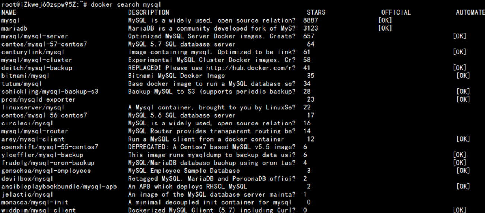

最近准备入坑docker，被各种安利说好用，我也准备亲自尝试一下了，但是网上那些零零散散的东西并不是一个完整的教程，官方文档看的也晕晕乎乎的，那就自以一点点踩坑，然后自己做个详细的入门笔记吧。
Docker初使用
1. Dcoker
1.1 什么是Docker
Docker是一个开源的应用容器引擎，让开发者可以打包他们的应用以及依赖包到一个可移植的镜像中，然后发布到任何流行的 Linux或Windows 机器上，也可以实现虚拟化。容器是完全使用沙箱机制，相互之间不会有任何接口。
1.2 Docker的应用场景
- Web 应用的自动化打包和发布。
- 自动化测试和持续集成、发布。
- 在服务型环境中部署和调整数据库或其他的后台应用。
- 从头编译或者扩展现有的 OpenShift 或 Cloud Foundry 平台来搭建自己的 PaaS 环境。
1.3 Docker的优势
- 快速，一致地交付您的应用程序
- 响应式部署和扩展
- 在同一硬件上运行更多工作负载
我们可以从下面这张表格很清楚地看到容器相比于传统虚拟机的特性的优势所在：
| 特性 | 容器 | 虚拟机 |
|---|---|---|
| 启动 | 秒级 | 分钟级 |
| 硬盘使用 | 一般为MB | 一般为GB |
| 性能 | 接近原生 | 弱于 |
| 系统支持量 | 单机支持上千个容器 | 一般是几十个 |
1.4 Docker架构
Docker包括三个基本概念分别是Image(镜像)、Container(容器)和Repository(仓库)。
Image(镜像)：Docker镜像就相当于是一个root文件系统，就是一堆只读层(read-only layer)的统一视角。比如官方镜像 ubuntu:16.04 就包含了完整的一套 Ubuntu16.04 最小系统的 root 文件系统。
Container(容器)：容器(container)的定义和镜像(image)几乎一模一样，也是一堆层的统一视角，唯一区别在于容器的最上面那一层是可读可写的。由于容器的定义并没有提及是否要运行容器，所以实际上，容器 = 镜像 + 读写层。
镜像(Image)和容器(Container)的关系，就像是面向对象程序设计中的类和实例一样，镜像是静态的定义，容器是镜像运行时的实体。容器可以被创建、启动、停止、删除、暂停等。
Repository(仓库)：仓库可看着一个代码控制中心，用来保存镜像。通常，一个仓库会包含同一个软件不同版本的镜像，而标签就常用于对应该软件的各个版本 。我们可以通过<仓库名>:<标签>的格式来指定具体是这个软件哪个版本的镜像。如果不给出标签，将以latest作为默认标签。
Docker使用客户端-服务器(C/S)架构模式，使用远程API来管理和创建Docker容器。Docker容器通过Docker镜像来创建。容器与镜像的关系类似于面向对象编程中的对象与类。Docker 客户端与 Docker 服务器进行交互，Docker服务端负责构建、运行和分发Docker镜像。Docker客户端和服务端可以运行在一台机器上，也可以通过RESTful、stock或网络接口与远程Docker服务端进行通信。
| Docker | 面向对象 |
|---|---|
| 容器 | 对象 |
| 镜像 | 类 |

| 概念 | 说明 |
|---|---|
| Docker 镜像(Images) | Docker 镜像是用于创建 Docker 容器的模板，比如 Ubuntu 系统。 |
| Docker 容器(Container) | 容器是独立运行的一个或一组应用，是镜像运行时的实体。 |
| Docker 客户端(Client) | Docker 客户端通过命令行或者其他工具使用 Docker SDK 与 Docker 的守护进程通信。 |
| Docker 主机(Host) | 一个物理或者虚拟的机器用于执行 Docker 守护进程和容器。 |
| Docker 仓库(Registry) | Docker 仓库用来保存镜像，可以理解为代码控制中的代码仓库。Docker Hub 提供了庞大的镜像集合供使用。一个 Docker Registry 中可以包含多个仓库（Repository）；每个仓库可以包含多个标签（Tag）；每个标签对应一个镜像。通常，一个仓库会包含同一个软件不同版本的镜像，而标签就常用于对应该软件的各个版本。我们可以通过 <仓库名>:<标签> 的格式来指定具体是这个软件哪个版本的镜像。如果不给出标签，将以 latest 作为默认标签。 |
| Docker Machine | Docker Machine是一个简化Docker安装的命令行工具，通过一个简单的命令行即可在相应的平台上安装Docker，比如VirtualBox、 Digital Ocean、Microsoft Azure。 |
2. 安装Docker
2.1 开始安装
由于apt官方库的docker版本可能比较旧，所以先卸载可能存在的旧版本：
1 | $ sudo apt-get remove docker docker-engine docker-ce docker.io |
更新apt包索引：
1 | $ sudo apt-get update |
安装以下包以使apt可以通过HTTPS使用存储库(repository):
1 | $ sudo apt-get install -y apt-transport-https ca-certificates curl software-properties-common |
添加Docker软件源的官方GPG密钥:
1 | $ curl -fsSL https://download.docker.com/linux/ubuntu/gpg | sudo apt-key add - |
使用下面命令来设置stable存储库
1 | $ sudo add-apt-repository "deb [arch=amd64] https://download.docker.com/linux/ubuntu $(lsb_release -cs) stable" |
再更新一下apt包索引：
1 | $ sudo apt-get update |
安装最新版本的Docker CE：
1 | $ sudo apt-get install -y docker-ce |
因为对docker操作需要的是管理员权限,所以普通用户操作时需要加上sudo命令,如果是管理员,,则正常输入命令,不用带sudo。
2.2 验证docker
查看docker版本:
1 | $ sudo docker version |

启动docker服务
1 | $ sudo systemctl start docker |
查看docker服务是否启动:
1 | $ sudo systemctl status docker |

3. 使用Docker
3.1 MySql镜像
查看现有镜像：
1 | docker search mysql |

name：表示名称
Description：介绍说明
Stars：关注度
Official：是不是官方的
Automated：是不是私有创建的
拉取mysql 5.7版本的镜像：
1 | docker pull mysql:5.7 |
冒号后面跟的是要拉取的版本号，如果不标明版本号，则默认拉取最新版本的。
运行镜像：
1 | docker run -d -p 3306:3306 --name mysql -e MYSQL_ROOT_PASSWORD=123456 mysql:5.7 |
-d：标识是让docker容器在后台运行。
-p：标识端口映射，前面是主机对外服务端口，后面是映射到docker容器的端口。
–name：定义一个容器的名字，方便后面执行操作。如果没有指定name，那么deamon会自动生成一个随机数字符串当作UUID。
-e：设置环境变量或者覆盖已存在的环境变量。在此设置的是mysql的密码。
这样就已经在docker里运行了一个mysql，可以在主机上通过可视化工具进行远程连接了。
3.2 Tomcat镜像
查询现有镜像：
1 | docker search tomcat |
拉取tomcat 8.5版本的镜像：
1 | docket pull tomcat:8.5 |
查看拉取的镜像：
1 | docker images |
运行tomcat镜像：
1 | docker run -d -p 8080:8080 --name mytomcat tomcat:8.5 |
将目录下的war包部署到tomcat镜像：
1 | docker cp hello.war mytomcat:/usr/local/tomcat/webapps/ |
将war包部署到tomcat镜像就是将war包放到镜像里的wabapps文件夹里。
docker cp [war包路径] [镜像名称或镜像ID]:/usr/local/tomcat/wabapps/
重启镜像：
1 | docker restart mytomcat |
进入容器内部：
1 | docker exec -it mytomcat /bin/bash |
通过以上命令就已经进入到容器内部，进行一个交互操作，退出时执行exit就行。
4. 一些常用命令
创建容器并运行
语法：docker run [OPTIONS] IMAGE [COMMAND] [ARG…]
OPTIONS说明：
- -d：后台运行容器，并返回容器ID
- -i：以交互模式运行容器，通常与 -t 同时使用
- -P：随机端口映射，容器内部端口随机映射到主机的高端口
- -p：指定端口映射，格式为：主机(宿主)端口:容器端口
- -t：为容器重新分配一个伪输入终端，通常与 -i 同时使用
- –name=“XXX”：为容器指定一个名称
- -h：指定容器的hostname
- -e：设置环境变量
- -m：设置容器使用内存的最大值
- –v：绑定一个卷
实例：
使用docker镜像tomcat:latest以后台模式运行一个容器，将容器的8080端口映射到主机8081端口，主机目录/webapps映射到容器的/webapps目录。
1 | docker -d -p 8081:8080/tcp --name mytomcat -v /webapps:/usr/local/tomcat/webapps tomcat:latest |
查看运行的容器：
语法：docker ps [OPTIONS]
OPTIONS说明：
-a：显示所有的容器，包括未运行的。
-l：显示最近创建的容器
-n：列出最近创建的n个容器。例：
docker ps -n 5
实例：
列出所有容器信息。
输出详情介绍：
CONTAINER ID：容器ID
IMAGE：使用的镜像
COMMAND：启动镜像时运行的命令
CREATED：容器的创建时间
STATUS：容器状态
状态一共有7种：
- created (已创建)
- restarting (运行中)
- running (迁移中)
- paused (暂停)
- exited (停止)
- dead (死亡)
PORTS：容器的端口信息和使用的连接类型(tcp\udp)
NAMES：容器的名称
查询现有镜像
语法：docker search [OPTIONS] TERM
OPTIONS说明：
–automated：只列出automated build类型的镜像。
–no-trunc：显示完整的镜像描述。
-s：列出收藏数不小于指定值的镜像。
实例：
从Docker Hub查找所有镜像名包含mysql，并且收藏数大于10的镜像。(docker search -s 10 mysql)
具体各个参数含义，参看上面写的内容。
启动/关闭/重启容器
语法：
启动：docker start [容器名称/容器ID]
关闭：docker stop [容器名称/容器ID]
重启：docker restart [容器名称/容器ID]
容器ID可以只写前四位，docker会自动去寻找，因为ID是随机的，所以前四位重复的就几乎没有。
删除容器
语法：docker rm [OPTIONS] CONTAINER [CONTAINER…]
OPTIONS说明：
- -f：通过 SIGKILL 信号强制删除一个运行中的容器。
- -l：移除容器间的网络连接，而非容器本身。
- -v：删除与容器关联的卷。
实例：
强制删除容器db01、db02
1 | docker rm -f db01 db02 |
删除所有已经停止的容器
1 | docker rm $(docker ps -a -q) |
删除镜像
语法：docker rmi [OPTIONS] IMAGE [IMAGE…]
OPTIONS说明：
- -f：强制删除
- -no-prune：不移除该镜像的过程镜像，默认移除
5. 总结
本篇主要讲的就是Docker的初步使用，具体的部署项目阶段和将自己的项目打包成Docker镜像进行运行将在以后进行具体说明。以上的给出的只是部分常用的命令和常用参数，具体更多命令和用法请参考菜鸟教程。(ps：不是打广告，只是觉得整理的比较全)